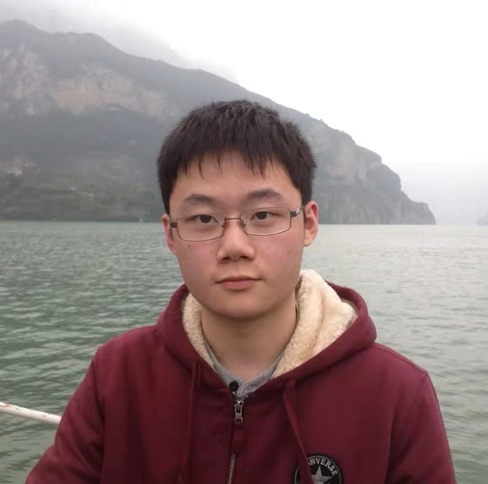

Zhaozhuo Xu
Email: zx22@rice.edu
[Scholar][Github] [Linkedin]
I am a CS PhD at Rice University working with professor Anshumali Shrivastava. My research focuses on similarity search and large scale machine learning.
Publications
Conference
* indicates equal contribution
-
Zhaozhuo Xu, Zhao Song and Anshumali Shrivastava, "Breaking the Linear Iteration Cost Barrier for Some Well-known Conditional Gradient Methods Using MaxIP Data-structures", NeurIPS 2021. PDF
-
Zhaozhuo Xu, Beidi Chen, Chaojian Li, Weiyang Liu, Le Song, Yingyan Lin and Anshumali Shrivastava, "Locality Sensitive Teaching", NeurIPS 2021. PDF
-
Aditya Desai*, Zhaozhuo Xu*, Menal Gupta, Anu Chandran, Antoine Vial-Aussavy and Anshumali Shrivastava, "Raw Nav-merge Seismic Data to Subsurface Properties with MLP based Multi-Modal Information Unscrambler", NeurIPS 2021. PDF
-
Shulong Tan, Zhaozhuo Xu, Weijie Zhao, Hongliang Fei, Zhixin Zhou and Ping Li, "Norm Adjusted Proximity Graph for Fast Inner Product Retrieval", KDD 2021. PDF
-
Beidi Chen, Zichang Liu, Binghui Peng, Zhaozhuo Xu, Jonathan Lingjie Li, Tri Dao, Zhao Song, Anshumali Shrivastava and Christopher Re, "MONGOOSE: A Learnable LSH Framework for Efficient Neural Network Training ", ICLR 2021 Oral. PDF
- Shulong Tan, Zhixin Zhou, Zhaozhuo Xu and Ping Li, "Fast Item Ranking under Neural Network based Measures", WSDM 2020. PDF
- Zhixin Zhou, Shulong Tan, Zhaozhuo Xu and Ping Li, "Möbius Transformation for Fast Inner Product Search on Graph", NeurIPS 2019. PDF
- Shulong Tan, Zhixin Zhou, Zhaozhuo Xu and Ping Li, "On Efficient Retrieval of Top Similarity Vectors", EMNLP 2019. PDF
Journal
- Rong Gui, Xin Xu, Rui Yang, Zhaozhuo Xu, Lei Wang Fangling Pu. "A General Feature Paradigm for Unsupervised Cross-Domain PolSAR Image Classification." IEEE Transactions on Geoscience and Remote Sensing (2021). PDF
- Rui Yang, Xin Xu, Rong Gui, Zhaozhuo Xu and Fangling Pu. "Composite Sequential Network With POA Attention for PolSAR Image Analysis." IEEE Transactions on Geoscience and Remote Sensing (2021). PDF
- Rui Yang, Fangling Pu, Zhaozhuo Xu, Chujiang Ding and Xin Xu. "DA2Net: Distraction-Attention-Driven Adversarial Network for Robust Remote Sensing Image Scene Classification." IEEE Geoscience and Remote Sensing Letters (2021). PDF
- Rui Yang, Xin Xu, Zhaozhuo Xu, Hao Dong, Rong Gui, and Fangling Pu. "Dynamic Fractal Texture Analysis for PolSAR Land Cover Classification." IEEE Transactions on Geoscience and Remote Sensing (2019). PDF
- Zhaozhuo Xu, Xin Xu, Lei Wang, Rui Yang, and Fangling Pu, "Deformable ConvNet with Aspect Ratio Constrained NMS for Object Detection in Remote Sensing Imagery", Remote Sensing, 9.12 (2017): 1312. PDF
Presentation
- "PISTACHIO: Patch Importance Sampling To Accelerate CNNs via a Hash Index Optimizer", Medical Imaging meets NeurIPS (MedNeurIPS) 2021. PDF
- "Satellite Images and Deep Learning to Identify Discrepancy in Mailing Addresses with Applications to Census 2020 in Houston", Joint Statistical Meetings (JSM) 2020. PDF
Experience
Research Developer Intern, Cognitive Computing Lab, Baidu Research, 2018 - 2019
Education
Rice University, CS PhD, 2019 - Present
Stanford University, EE MS, 2017 - 2019
Wuhan University, EE BS, 2013 - 2017